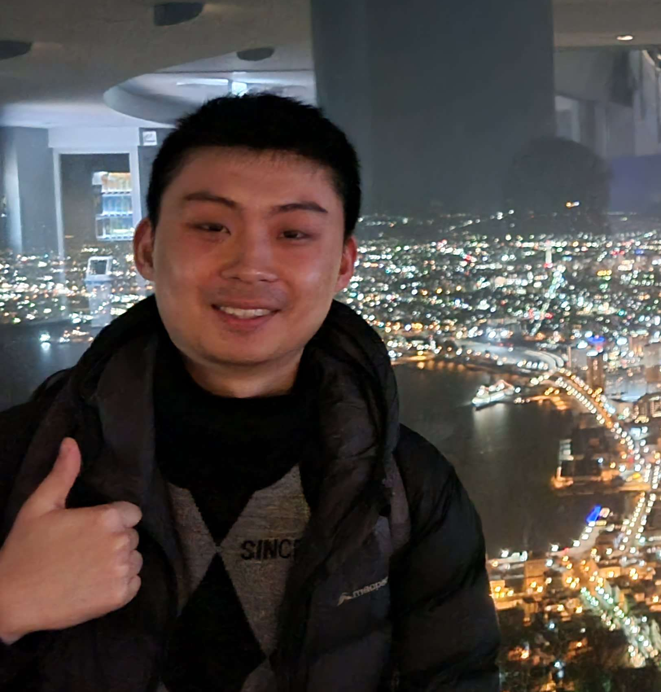

Kenny Chen
PhD Student · The University of Sydney
I am a PhD student at The Universitty of Sydney, co-advised by Dr. Clément Canonne and Dr. Julian Mestre, working broadly beyond worst case analysis of online algorithms as well as quantum algorithms.
Prior to this, I worked in the finance industry.
